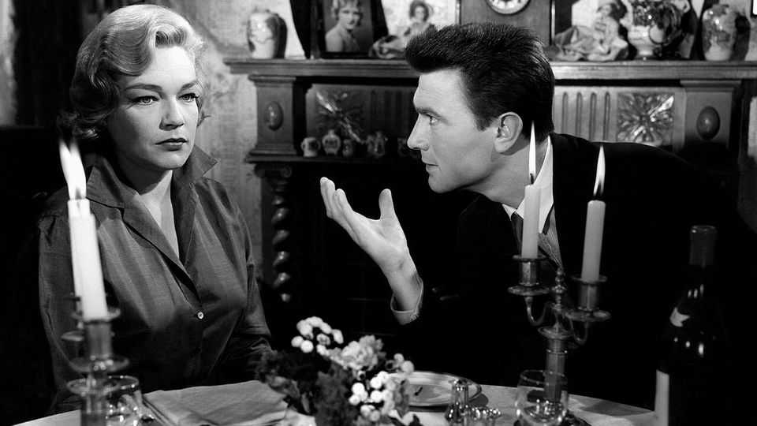

Slipping up or down the class system is surprisingly bearable
Much better than being solidly working-class
June 25th 2026

“I wanted an Aston Martin, I wanted a three-guinea linen shirt, I wanted a girl with a Riviera suntan.” So Joe Lampton, the young working-class hero of “Room at the Top”, announced his desire to penetrate the professional middle class. John Braine’s novel of 1957 was one of many post-war books to feature cocky, headstrong social climbers. It ends tragically, with deception, heartbreak and death.

Upward social mobility was a common experience for men and women who grew up in the mid-20th century. It is rarer these days, mostly because the great economic shift from manufacturing to services has run its course. Many people still acquire better jobs than their parents had, but a growing number find worse ones (see top chart). How do they feel about it?
The Sutton Trust, a charity, recently provided some answers. Kevin Latham and Esme Lillywhite draw on a long-running survey that covers tens of thousands of families. They measure social mobility by looking at the jobs people do rather than how they describe themselves. That is wise, because Britons cannot be trusted on matters of class. Middle-class people tend to play up or invent working-class roots and overstate their own mobility.
Being solidly middle-class seems to be the surest route to contentment. Once characteristics like ethnicity and age are controlled for, people who were born into professional families and do professional jobs themselves have the highest life satisfaction (see bottom chart). But another group is close behind: modern-day Joe Lamptons, who have risen higher up the occupational ladder than their parents.
Other researchers, including Tak Wing Chan of University College London, have discovered the same pattern. Yet some will still find it surprising. Accounts of upward social mobility tend to emphasise dislocation and pain. Lampton felt slighted by his new middle-class associates. Others sense they have left something behind, or have somehow cheated. “It is difficult to avoid a sense of treachery and overwhelming guilt,” wrote Diane Reay, a miner’s daughter who became a prominent sociologist.
Perhaps the intellectuals who write such accounts are peculiar. A working-class child who triumphs in business might feel less guilty than an educational prodigy. Besides, material success is nice—so nice that it blunts feelings of dislocation. Upwardly mobile people have better, more stable jobs than solidly working-class people, and are more likely to own their homes. Such things mostly explain their greater contentment.
Material differences might also explain why social risers are a bit less contented than the established middle classes. “I’m delighted that I am where I am,” says Ben Jones, who grew up in a working-class household and now works on education policy in Greater Manchester. Meeting the children of professionals at university, he was impressed by their “certainty that things will work out”. But their ease and confidence, and his lack of it, was less a difference in attitude than an accurate reading of their different circumstances. The children of professionals tend to have strong safety nets, making them fearless. By contrast, Mr Jones soon had to care for his mother.
What of the unlucky folk who end up doing more menial jobs than their parents? They seem less satisfied than the upwardly mobile, but more satisfied than the working-class children of working-class parents. Some may have happily traded high salaries for reasonable hours. The social fallers seem satisfied with their leisure time, although they resent their pay. How their parents feel is not recorded. ■
For more expert analysis of the biggest stories in Britain, sign up to Blighty, our weekly subscriber-only newsletter.